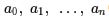
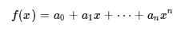
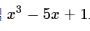
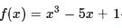

다항함수

다항함수란 함수의 값, 즉 치역의 원소가 다항식의 값으로 정의된 함수를 말한다.
(미지수가 1개인) 다항함수 f(x)는 실수 에 대하여

의 형태를 갖는다. 특히 최고차항의 계수 An이 0이 아닌
경우 n을 함수의 차수라 하고, f(x)를 n차 다항함수라고 한다.
예를 들어, 3차 다항식 로 정의된 함수 은 다항함수이다.
[네이버 지식백과] 다항함수 [polynomial function] (수학백과, 2015.5, 대한수학회)